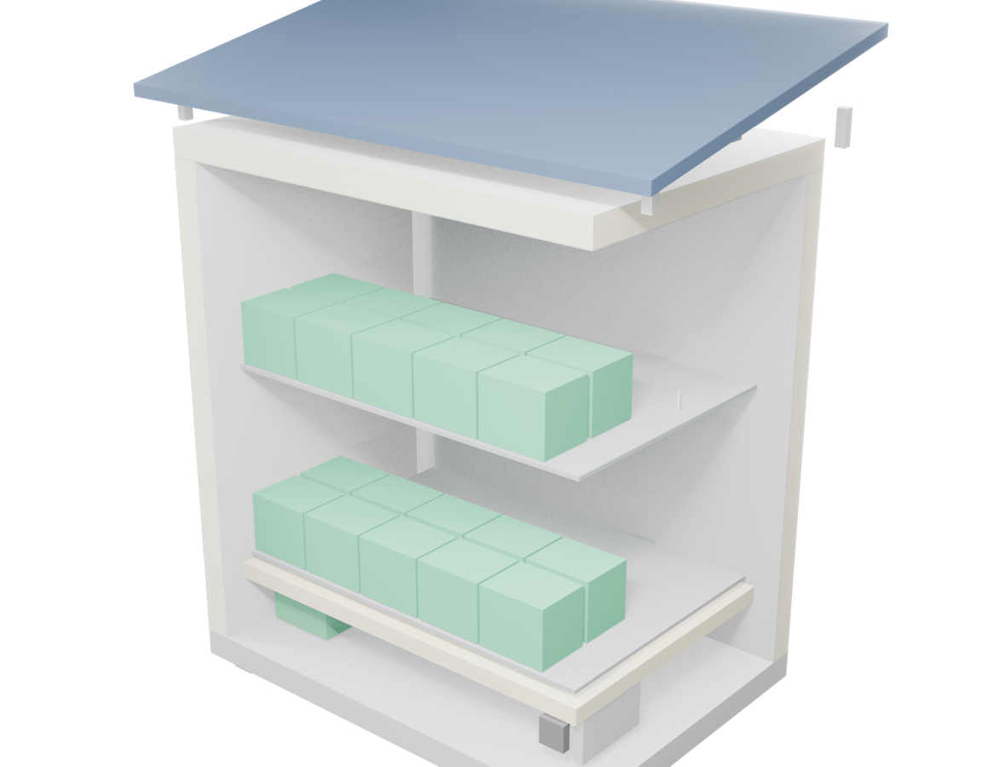
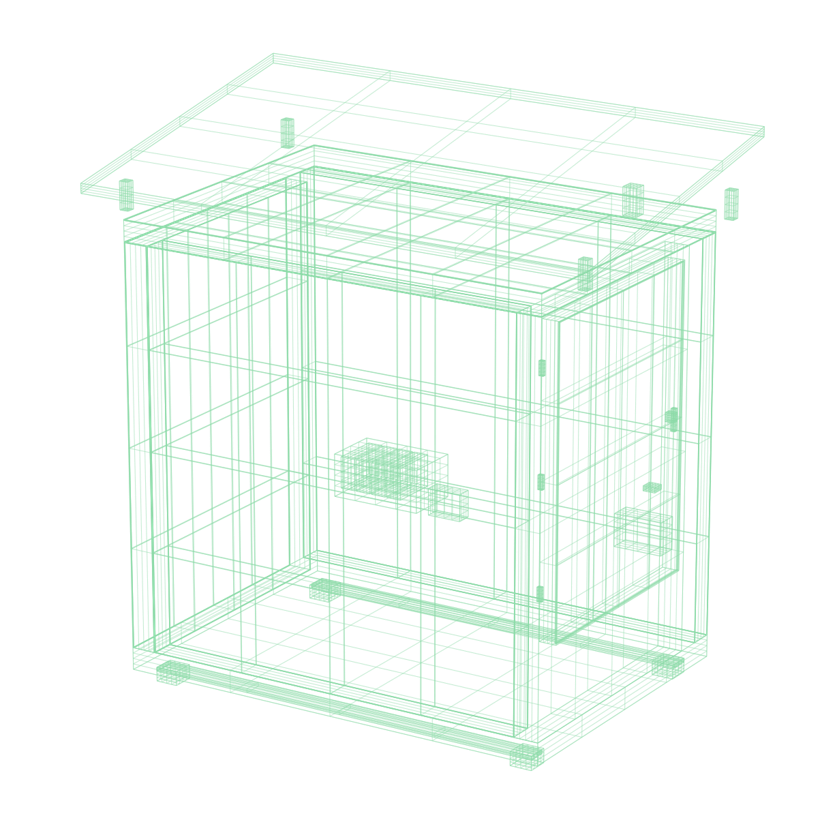
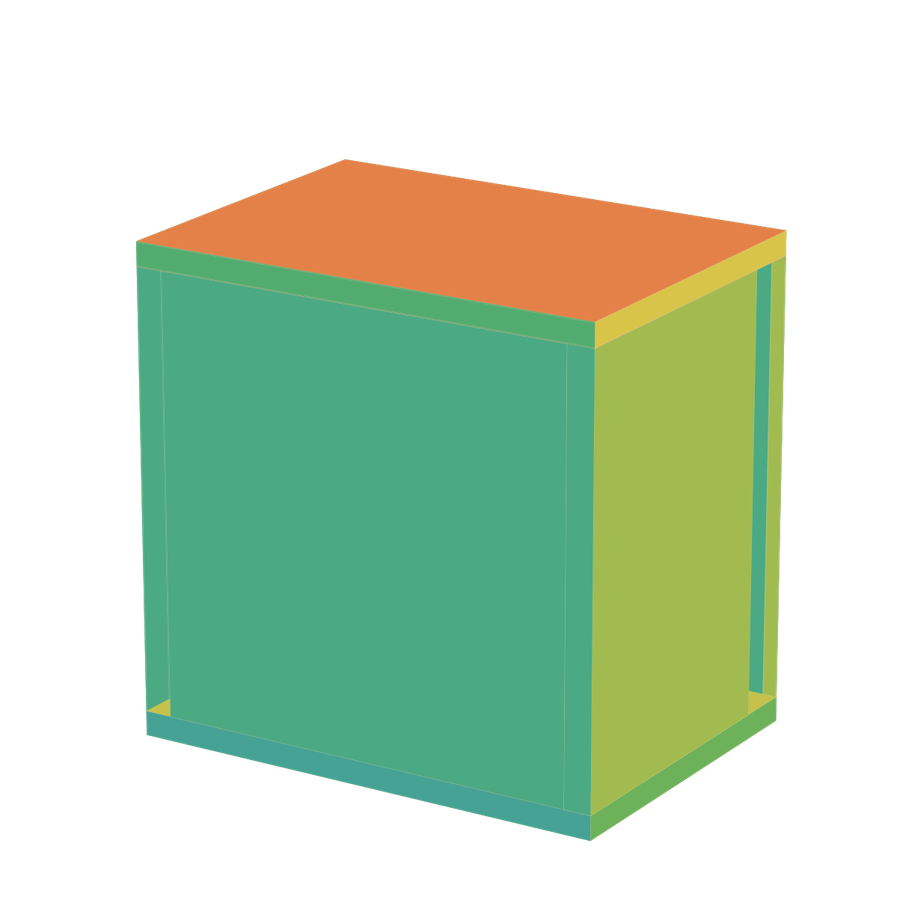

HarvestGuard
A solar cold-storage pod — and the verified-data credit rail it builds for the smallholder farmers finance cannot see.
The cold chain stops before the smallholder farmer.
The pod is the wedge.
The verified data is the moat.
Cold at the farm gate
A solar pod, sub-village scale, billed per crate-day over M-Pesa — one 4–13 °C zone, crop-cohorted by the app.
A record by construction
Every use is device-signed and payment-reconciled — a history, not a claim.
A credit identity
The first credential a lender can act on — cold storage as an on-ramp to finance.
Off-the-shelf refrigeration, sized for 35 °C and no grid.
A full CAD model — down to the crate, the compressor, the seal.



Chosen for heat, humidity, and dust.
The energy budget closes — with margin.
A record a lender can trust — by construction.
Device-authenticated
A per-pod X.509 certificate; a record from any unauthenticated source cannot enter the system.
Independently witnessed
Each transaction reconciles against the M-Pesa settlement API — a payment network no party controls.
Tamper-evident
Append-only, offline-first telemetry; gaps from lost connectivity are marked, never hidden.
Behavioral data → a score a regulated lender can act on.
Proven parts, an unfilled seam.
A testable path, with kill criteria at every gate.
Prove it under failure
±0.5 °C hold · 100% state recovery · ≥18 h autonomy.
10 pods, Meru
≥95% uptime · ≥70% utilisation · 100% M-Pesa reconciliation.
Train model v1
≥200 farmers × ≥3 cycles × ≥12 months.
100 pods · live credit
AUC > 0.65 · a lender validates on holdout.